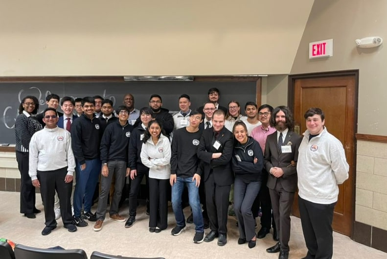
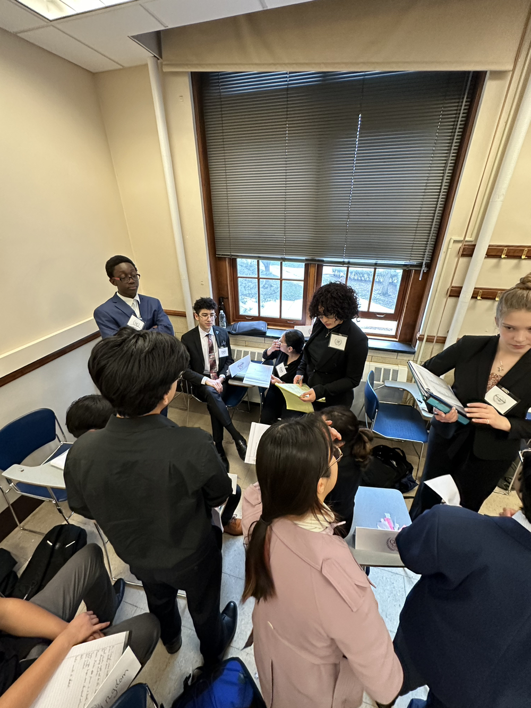
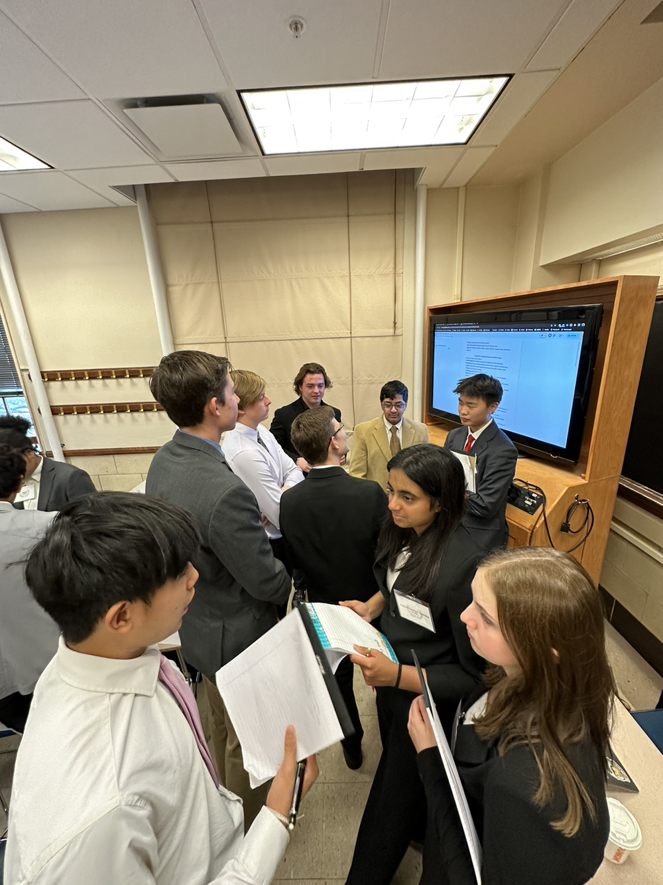
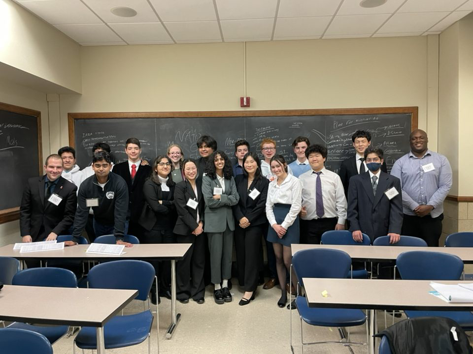

You are viewing an archive page of MUNI XXV. Click here to go to the current website.

We are Illinois MUN.
Secretariat

Sasha Rushing
Secretary-General
Sasha Rushing is this year's Secretary-General, having served last year as USG for Registration. SecGen Rushing is excited to finally bring MUNI back to in-person status. SecGen Rushing is a junior studying history, with a minor in German. Sasha joined Model UN his first year of high school, and immediately enjoyed taking on the positions of countries around the world. Outside of Model UN, SecGen Rushing is a coxswain for Illinois Rowing, and he enjoys reading, running, and of course history.
Tina Wayne
USG of Committees
Tina Wayne is this year's USG for Committees, choosing chairs and directors, assigning staffing positions, and editing committees. USG Wayne is a senior double majoring in Political Science and East Asian Languages and Cultures. Tina joined Model UN in high school, and fell in love with the process, the premise, and the people. USG Wayne also loves reading, ice skating, and fashion history.
Keon Sung
USG of Logistics
Keon Sung serves as this year's Under-Secretary-General of Logistics, coordinating conference operations and transportation. Keon would go on to serve as Secretary-General for MUNI XXVI the following year.

UN Development Programme [MUNI XXV]

MUNI XXV

Director Shenanigans

NATO/OTAN [MUNI XXV]